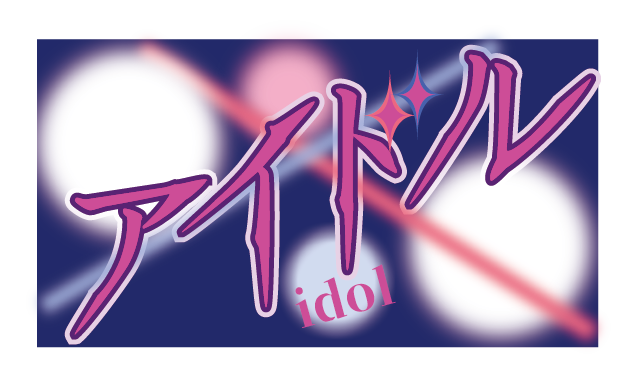
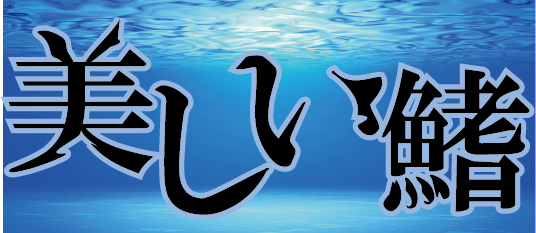

総合ランキング
1位 アイドル/YOASBOI
コンポーザーのAyaseとボーカルのikuraからなる有名音楽ユニットのYOASOBIがアニメ「推しの子」のオープニング主題歌を担当。
その人気はとてつもない人気で週刊オリコンランキングを7週連続でとっている。
2位 美しい鰭/スピッツ
有名グループ、スピッツが「名探偵コナン 黒鉄の魚影」の主題歌を担当。
映画もものすごい人気でアイドル程ではないがランキング上位を維持しつつある。カラオケでも人気な一曲。
3位 怪獣の花唄/Vaundy
有名グループのVaundyがドラマ「silent」の主題歌を担当。
ドラマの人気もすごく話題となり歌も人気になった、カラオケのランキングでも1位をとるなど幅広い人気を獲得している。